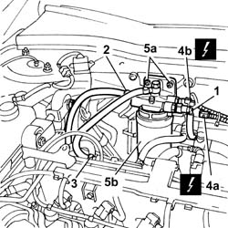

1044B10 fuel filter assembly - r + r or replace
- Path
- Procedures > 10 ENGINE > 1044 FUEL CIRCUIT PUMP/S AND DEVICES > 1044B FUEL FILTERS > 1044B10 fuel filter assembly - r + r or replace
- Kind
- repair procedure (removal / refitting; the operation number is the code)
- Applies to
- engines: 2.4 JTD 10V; all production periods
- Interactive page
- https://sloeber94.github.io/elrnDB-lThss/en/#/100091
Applies to: engines: 2.4 JTD 10V; all production periods
 Removing
Removing
 Refitting
Refitting- Open the boot and disconnect the negative battery terminal.
See in Op. 7040D50 ENGINE COMPARTMENT UPPER SOUND INSULATION SHIELD - R.R.
See in Op. 1016A10 SOUND-PROOFING COVER - R.R.
1. Disconnect the front fuel supply pipe from the fuel filter.
2. Disconnect the supply pipe to the pressure pump from the fuel filter.
3. Disconnect the supply pipe to the fuel return manifold from the fuel filter.
4. Disconnect the electrical connections for the fuel temperature diesel resistance (4a) and (4b).
5. Undo the fixing nuts (5a) and remove the fuel filter assembly (5b).
 | Description | Connector |
|---|---|---|
4a | Diesel pre-heating resistance | O020A |
| Description | Connector |
|---|---|---|
4b | Diesel pre-heating resistance | O020B |

Applies to: engines: 2.4 JTD 10V; all production periods
Refitting
Removing- Fit the fuel filter assembly and tighten the fixing nuts to torque.
 | Value - daNm | Fastening | Component | Ø |
|---|---|---|---|---|
. | 2.4 | Nut | FUEL FILTER | M8 |
- Connect the electrical connections for the sensors.
| Description | Connector |
|---|---|---|
. | Diesel pre-heating resistance | O020A |
| Description | Connector |
|---|---|---|
. | Diesel pre-heating resistance | O020B |
- Connect the fuel pipes disconnected previously.
See in Op. 1016A10 SOUND-PROOFING COVER - R.R.
See in Op. 7040D50 ENGINE COMPARTMENT UPPER SOUND INSULATION SHIELD - R.R.
- Connect the negative battery lead and close the boot.